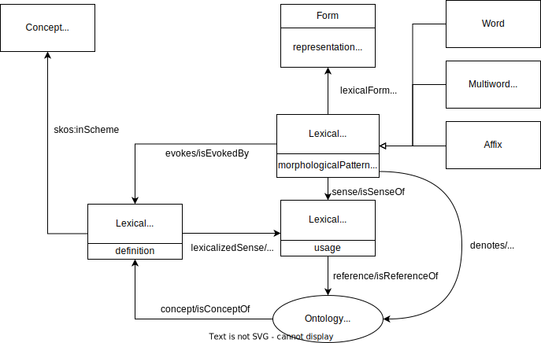

Perspectives on Linguistic Data Science
John P. McCrae - University of Galway
Course at ESSLLI 2024

Evaluation of Machine Translation
No single correct translation
- O: Macau passed legalization to avoid double tax.
- P1: Macao adopted bills to avoidance of double taxation
- P2: Macao adopted bills and avoidance of double taxation.
- P3: Macao approved bills and avoidance of double taxation
No single correct translation
Variants
- O: Macau passed legalization to avoid double tax.
- P1: Macao adopted bills to avoidance of double taxation
- P2: Macao adopted bills and avoidance of double taxation.
- P3: Macao approved bills and avoidance of double taxation
No single correct translation
Spelling
- O: Macau passed legalization to avoid double tax.
- P1: Macao adopted bills to avoidance of double taxation
- P2: Macao adopted bills and avoidance of double taxation.
- P3: Macao approved bills and avoidance of double taxation
No single correct translation
Synonyms
- O: Macau passed legalization to avoid double tax.
- P1: Macao adopted bills to avoidance of double taxation
- P2: Macao adopted bills and avoidance of double taxation.
- P3: Macao approved bills and avoidance of double taxation
Manual Evaluation
Adequacy
- Does the translation contain all the information in the source?
- Rated from (1=no meaning) to (5=all meaning)
Fluency
- Does the translation sound natural?
- Does it contain grammatical errors?
- Rated from (1=incomprehensible) to (5=perfect)
BLEU - BiLingual Evaluation Understudy
First method with high correspondence between a machine's output and that of a human
Standard evaluation for MT (still)
Product of precision and a brevity penalty
- Precision: how many of the machine's words are in the reference?
- Brevity penalty: how long is the machine's output compared to the reference?
Example - BLEU
- Reference: Israeli officials are responsible for airport security
- System A: Israeli officials responsibility of airport safety
- System B: Israeli officials are responsible
| Metric | System A | System B |
|---|---|---|
| 1-gram precision | ||
| 2-gram precision | ||
| 3-gram precision | ||
| 4-gram precision | ||
| Brevity penalty |
Example - BLEU-1
- Reference: Israeli officials are responsible for airport security
- System A: Israeli officials responsibility of airport safety
- System B: Israeli officials are responsible
| Metric | System A | System B |
|---|---|---|
| 1-gram precision | 2/6 | 4/4 |
| 2-gram precision | ||
| 3-gram precision | ||
| 4-gram precision | ||
| Brevity penalty |
Example - BLEU-2
- Reference: Israeli officials are responsible for airport security
- System A: Israeli officials responsibility of airport safety
- System B: Israeli officials are responsible
| Metric | System A | System B |
|---|---|---|
| 1-gram precision | 2/6 | 4/4 |
| 2-gram precision | 1/5 | 3/3 |
| 3-gram precision | ||
| 4-gram precision | ||
| Brevity penalty |
Example - BLEU-3,4 and Brevity Penalty
- Reference: Israeli officials are responsible for airport security
- System A: Israeli officials responsibility of airport safety
- System B: Israeli officials are responsible
| Metric | System A | System B |
|---|---|---|
| 1-gram precision | 2/6 | 4/4 |
| 2-gram precision | 1/5 | 3/3 |
| 3-gram precision | 0/4 | 2/2 |
| 4-gram precision | 0/3 | 1/1 |
| Brevity penalty | 6/7 | 4/7 |
BLEU (System-A) = 0
BLEU (System-B) = 4/7
Linguistic Linked Data
Structured and Unstructured Data
- Unstructuted data is text, images, audio, video, ...
- Structured data is data in a database
- Lots of knowledge, especially in graph form
Wikidata
Massive knowledge base
Q437Linked Data

Linked Open Data Cloud
Linguistic Linked Open Data Cloud

Promise of Linguistic Linked Data
- Representation and Modelling
- Structural Interoperability
- Federation
- Ecosystem
- Expressivity
- Conceptual Interoperability
- Dynamic Import
Interoperability
Different annotation schemes
| Susanne | Penn | |
| The | AT | DT |
| Fulton | NP1s | NNP |
| County | NNL1cb | NNP |
| Grand | JJ | NNP |
| Jury | NN1c | NNP |
| said | VVDv | VBD |
| Friday | NPD1 | NNP |
NLP Interchange Format

OntoLex-Lemon - Lexicon Model for Ontologies
Summary
Summary
- Social media is an important data source (but be careful!)
- Sentiment and emotion analysis is achieving good performance
- Computers can now tackle the "great unread"
- Linking data can increase interoperability and usabilty
Thank you for attending the course!
Feel free to contact me at john@mccr.ae if you have any questions
Back